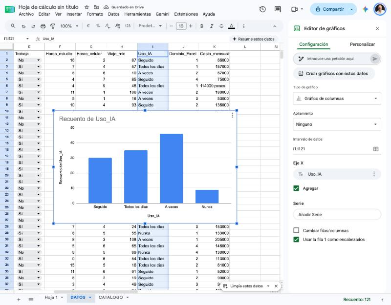
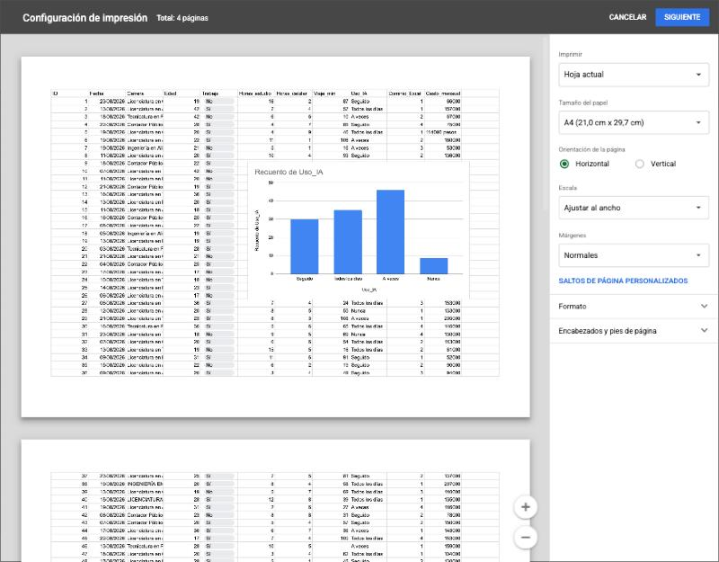
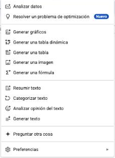
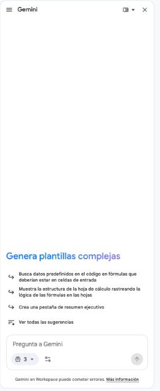

Qué gráfico para qué pregunta
Un gráfico no es un adorno: es una respuesta visual a una pregunta. Antes de tocar el menú, tenés que saber qué querés mostrar. De esa pregunta sale el tipo de gráfico.
| Si la pregunta es... | Usá | Ejemplo del caso |
|---|---|---|
| ¿Cuál es más grande? Comparar categorías | Columnas o barras | Respuestas por carrera |
| ¿Qué parte del total es cada uno? | Torta (pocas partes) | Trabaja Sí y No |
| ¿Cómo cambia en el tiempo? | Líneas | Respuestas por día de la encuesta |
| ¿Hay relación entre dos números? | Dispersión | Horas de celular y horas de estudio |
⚠️ La torta tiene reglas
Una torta solo sirve cuando las partes suman un total y son pocas, no más de cinco. Con once carreras es ilegible: ahí van barras. Y nunca uses el efecto 3D: deforma las proporciones.
Otra regla: no se grafica la tabla de 120 filas, se grafica un resumen. Los gráficos de esta clase salen de tablas chicas que arman tus fórmulas (CONTAR.SI, PROMEDIO.SI), no de los datos crudos.
Armar y personalizar un gráfico
Se selecciona la tabla resumen, incluyendo los encabezados, y se elige Insertar → Gráfico. Sheets propone un tipo; a la derecha se abre el Editor de gráficos, con dos pestañas.
| Pestaña | Qué controla |
|---|---|
| Configuración | El tipo de gráfico, el intervalo de datos, qué columna es el eje X y cuáles son las series, y si la primera fila se usa como encabezado. |
| Personalizar | El estilo: títulos del gráfico y de los ejes, colores de las series, etiquetas de datos, leyenda y tipografía. |

El Editor de gráficos en la pestaña Configuración: tipo de gráfico, intervalo de datos, eje X, series y Usar la fila 1 como encabezados. Con una columna de texto, Sheets agrupa y cuenta solo (Agregar).
Datos que no están juntos
Si las columnas que querés graficar no son vecinas, como la Carrera (columna A) y las Respuestas (columna C) de la tabla CARRERAS, seleccionalas con Ctrl apretado (en Mac, ⌘), o escribilas en el campo Intervalo de datos separadas por coma: A1:A12,C1:C12.
Un gráfico que se mueve con tus datos
El gráfico queda unido a su tabla. Si cambia un número, el gráfico cambia. Y si la tabla depende de una celda (como el selector que armás en la próxima sección), el gráfico se redibuja cuando cambiás la selección.
Un título que diga algo
El título por defecto (Respuestas por Carrera) describe el gráfico. Uno mejor dice lo que muestra: Administración concentra casi una de cada cuatro respuestas. Un título con la conclusión le ahorra trabajo a quien lo lee. Poné también etiquetas en los ejes y sacá la leyenda si hay una sola serie.
Tres gráficos sobre 8 filas
- Abrí tu archivo Retrato del curso. Creá una hoja
PRACTICA11y copiá en ella las primeras 8 respuestas (DATOS!A1:K9) con Pegado especial → Solo valores. - En
A12:B12escribíUso de IAyRespuestas; enA13:A16los cuatro niveles (Nunca,A veces,Seguido,Todos los días) y enB13=CONTAR.SI($I$2:$I$9;A13), copiada. Controles: 0, 3, 3 y 2. SeleccionáA12:B16e insertá un gráfico de columnas con un título que diga algo y etiquetas de datos. - Seleccioná con
Ctrllas columnasC1:C9(carrera) yK1:K9(gasto) e insertá un gráfico de barras. Tiene que mostrar 8 barras. - Armá una tabla de dos filas con
Trabaja(5) yNo trabaja(3) usandoCONTAR.SIe insertá una torta. Decidí si con dos partes es el gráfico más claro.
El tablero con selector
Un tablero es una hoja pensada para ser mirada, no para ser leída fila por fila: unos pocos números destacados, uno o dos gráficos y un título. Lo bueno es que se puede armar con un selector que cambia todo lo que muestra. Una sola hoja sirve para cualquier departamento.
El selector
Una celda con un menú desplegable (validación de datos, LISTAS!A2:A5) donde se elige el departamento. Todas las fórmulas del tablero leen esa celda: cambian los números y los gráficos, sin tocar ni una fórmula.
Una función más: contar con dos condiciones
CONTAR.SI mira una sola condición. Para dos o más, está CONTAR.SI.CONJUNTO, que sigue el mismo patrón: pares de rango; criterio, tantos como necesites.
=CONTAR.SI.CONJUNTO(Depto; B2; DATOS!E2:E121; "Sí") cuenta las personas del departamento elegido y que trabajan. Su prima PROMEDIO.SI.CONJUNTO(rango_promedio; rango1; criterio1; ...) promedia con varias condiciones. Cuidado: acá el rango a promediar va primero.
| A | B | C | |
|---|---|---|---|
| 1 | Tablero: Retrato del curso 2026 | ||
| 2 | Departamento | CyT | |
| 3 | Respuestas | 25 | |
| 4 | % que trabaja | 60,0% | |
| 5 | Gasto promedio | $ 120.880,00 | |
| 6 | Viaje promedio (min) | 53,17 |
El cabezal del tablero con el selector en B2. Los valores que se ven son los de CyT: al elegir otro departamento, cambian.
| Indicador | DEyA | CS | CyT | EUdA |
|---|---|---|---|---|
| Respuestas | 54 | 30 | 25 | 11 |
| % que trabaja | 66,7% | 50,0% | 60,0% | 63,6% |
| Gasto promedio | $ 130.462,96 | $ 124.466,67 | $ 120.880,00 | $ 131.000,00 |
| Viaje promedio (min) | 54,18 | 58,77 | 53,17 | 57,80 |
| Uso de IA (Nunca / A veces / Seguido / Todos los días) | 5 / 18 / 13 / 18 | 4 / 12 / 6 / 8 | 0 / 12 / 8 / 5 | 0 / 4 / 3 / 4 |
Esos son los valores de control: con el selector en cada departamento, tu tablero tiene que mostrar esas cifras.
Un tablero con selector en miniatura
- En
PRACTICA11, enO1escribíDepartamentoy enO2=BUSCARV(C2;CATALOGO!$A$2:$B$12;2;FALSO), copiada hasta la fila 9. - Creá la hoja
TABLERO_P. EnA2escribíDepartamentoy enB2un menú desplegable deLISTAS!A2:A5. EnA3:A5escribíRespuestas,% que trabajayGasto promedio, y en la columna B las fórmulas, todas leyendoB2:=CONTAR.SI(PRACTICA11!$O$2:$O$9;B2),=CONTAR.SI.CONJUNTO(PRACTICA11!$O$2:$O$9;B2;PRACTICA11!$E$2:$E$9;"Sí")/B3y=PROMEDIO.SI(PRACTICA11!$O$2:$O$9;B2;PRACTICA11!$K$2:$K$9). - Controles: DEyA 5, 80% y $ 114.200. CyT 2, 0% y $ 60.000. EUdA 1, 100% y $ 157.000.
- Elegí
CS. Aparece un error: ¿cuál es y por qué? (Repaso de errores: en esas 8 filas no hay nadie de CS.) - En
A8:A11escribí los niveles de IA y enB8=CONTAR.SI.CONJUNTO(PRACTICA11!$O$2:$O$9;$B$2;PRACTICA11!$I$2:$I$9;A8), copiada. ConDEyAtiene que dar 0, 1, 3 y 1. Insertá un gráfico de columnas de esa tabla y cambiá el selector: el gráfico se redibuja.
Imprimir y exportar a PDF
Un informe tiene que poder salir del archivo: en papel o en PDF. En Sheets se abre con Archivo → Imprimir (Ctrl+P), que muestra la vista previa a la izquierda y las opciones a la derecha.
| Opción | Qué hace |
|---|---|
| Imprimir | Qué parte sale: la hoja actual, todo el archivo o solo las celdas seleccionadas. Esta última es el área de impresión: seleccionás el rango y elegís esa opción. |
| Orientación | Vertical u horizontal. Los tableros anchos suelen ir en horizontal. |
| Escala | Ajustar al ancho achica todo para que entre en una página sin cortar columnas. |
| Márgenes | Normales, estrechos o personalizados. |
| Encabezados y pies | Número de página, título del archivo, nombre de la hoja y fecha. |
| Mostrar líneas de la cuadrícula | Se tilda o destilda: un informe se ve más limpio sin ellas. |

La Configuración de impresión: la vista previa a la izquierda y las opciones a la derecha (Imprimir, Orientación, Escala, Márgenes, Saltos de página personalizados).
Para decidir dónde corta la página, en esa misma pantalla, en Saltos de página personalizados, podés fijar el corte (solo con Hoja actual elegida); para repetir los encabezados en cada página de una tabla larga, inmovilizá la fila 1 y tildá la opción de repetir las filas inmovilizadas. Para obtener un PDF, en vez de la impresora elegí Archivo → Descargar → PDF, que abre las mismas opciones.
Imprimir una página
- En
TABLERO_P, seleccioná el rango con los indicadores, la tabla y el gráfico. - Abrí Archivo → Imprimir y elegí Celdas seleccionadas, orientación horizontal, escala Ajustar al ancho y sin líneas de cuadrícula.
- Tiene que entrar en una sola página, sin gráficos cortados. Si no entra, achicá el gráfico.
- Descargalo en PDF con Archivo → Descargar → PDF y abrilo.
Colaborar y pasar a Excel
Casi ningún informe se hace en soledad. Google Sheets está pensado para que varias personas trabajen en el mismo archivo, cada una desde su compu y al mismo tiempo, sin mandarse versiones por mail.
Compartir con el permiso justo
El botón Compartir permite agregar personas por mail o generar un enlace. Cada acceso tiene un rol: Lector mira, Comentador mira y comenta, Editor modifica. Se da siempre el rol mínimo necesario.
Comentarios y menciones
Con clic derecho sobre una celda y Insertar comentario (Ctrl+Alt+M) dejás una observación atada a esa celda. Si escribís @ y un nombre, mencionás a esa persona y le llega un aviso por mail. Cuando el comentario se resolvió, se marca como Resuelto.
Historial de versiones
Sheets guarda cada cambio y quién lo hizo. En Archivo → Historial de versiones → Ver historial de versiones ves el archivo en cualquier momento anterior y podés restaurarlo. Con Poner nombre a la versión actual marcás un hito, por ejemplo Antes de entregar.
Proteger lo que no se debe tocar
Datos → Proteger hojas e intervalos permite bloquear una hoja o un rango, de modo que solo lo editen las personas que vos elijas. Es buena idea proteger CRUDO.

Entre Sheets y Excel
Muchas organizaciones usan Excel y no Sheets, así que conviene saber pasar de uno a otro. Archivo → Descargar → Microsoft Excel (.xlsx) baja el archivo; al abrirlo en Excel, los datos, los formatos, las fórmulas comunes (SI, CONTAR.SI, BUSCARV) y el formato condicional se conservan en general. Lo que puede cambiar es el aspecto de los gráficos, y las funciones propias de Google (como QUERY o IMPORTRANGE) no existen en Excel. La prueba es abrirlo y comparar tus cifras de control.
Comentar, versionar y llevar a Excel
- Compartí tu archivo con una persona de tu comisión con rol de Comentador. Esa persona tiene que dejarte dos comentarios sobre
TABLERO_P: uno que mencione tu nombre con@con una duda, y otro con una sugerencia de diseño. Hacelo también con su archivo. - Respondé cada comentario y marcalo como resuelto.
- Abrí el historial de versiones, poné nombre a la versión actual (
Antes de seguir) y protegé la hojaCRUDOcon Datos → Proteger hojas e intervalos. - Bajá el archivo a
.xlsx, abrilo en Excel y comprobá queTABLERO_Pmuestra los mismos controles deDEyA(5, 80%, $ 114.200). Anotá enLEEMEqué cambió, si algo cambió.
La IA como auditora de tu trabajo
En 2026 casi todo el mundo tiene un asistente de IA al lado de la planilla. Sheets trae a Gemini incorporado, y también podés usar un chat aparte. Sirve para tres cosas: explicar una fórmula que no entendés, proponer una fórmula o un gráfico, y revisar tu trabajo. La condición es una sola: quien firma el informe sos vos, así que todo lo que la IA diga se verifica.


El menú Gemini de la barra superior de Sheets. Las opciones disponibles dependen de tu cuenta y de tu plan.

El panel lateral de Gemini, abierto desde el ícono de la estrella o desde el menú Gemini.
Los errores típicos de una IA con planillas
- Escribe las fórmulas con coma en vez de punto y coma, y Sheets en español las rechaza.
- Inventa columnas, hojas o rangos que no existen en tu archivo, o apunta a un rango incompleto.
- Hace cuentas de cabeza y se equivoca: pedirle "¿cuánto da el promedio?" no es lo mismo que pedirle la fórmula y calcularla vos.
- Contesta con seguridad aunque se equivoque, sin avisar que no está segura.
⚠️ Datos personales
La encuesta de este caso es simulada, pero en un trabajo real las respuestas tienen nombres, mails y datos de personas. Esos datos no se pegan en una IA pública sin autorización: se protegen igual que cualquier dato personal.
El protocolo: preguntar, probar, comparar, anotar
| Paso | Qué hacés |
|---|---|
| 1. Preguntar con contexto | Decile en qué columnas están los datos y qué querés lograr. Pedile la fórmula y la explicación. |
| 2. Probar aparte | Pegá la fórmula en una celda libre, nunca encima de tu trabajo. |
| 3. Comparar con un control | Contrastá el resultado con algo que sepas que está bien: un conteo que ya hiciste, un filtro con SUBTOTAL, una cifra de control. |
| 4. Anotar | Registrá en la hoja AUDITORIA qué preguntaste, qué te devolvió, cómo lo verificaste y qué decidiste: correcta, corregida o descartada. |
Auditar a la IA en miniatura
- Creá una hoja
AUDITORIAcon las columnasPregunta,Respuesta de la IA (resumen),Cómo lo verifiquéyVeredicto. - Pedile a la IA que explique la fórmula de
% que trabajadeTABLERO_P. Compará con lo que vos entendés y anotala. - Pedile una fórmula que cuente cuántas personas de DEyA trabajan en la muestra, diciéndole en qué columnas están los datos. Probala en una celda libre. El resultado correcto es 4. Anotá si coincidió y qué tuviste que corregir.
El pedido de la clase: la entrega final
📌 El pedido de Secretaría Académica
Necesitamos un informe de una página que muestre el retrato del curso y responda una pregunta propia de cada departamento, con la planilla de respaldo.
Hasta ahora todos construyeron lo mismo. En la entrega final del caso, el archivo es el mismo para todas las personas, pero cada una responde una pregunta distinta, según el departamento de su carrera. La caja de herramientas es la misma: lo que cambia es la mirada.
Lo que tiene que tener todo archivo
LEEMEcon título, autoría y qué contiene cada hoja.CRUDOintacta,DATOSlimpia (120 respuestas), sin errores en las fórmulas.TABLEROcon el selector funcionando y los cuatro departamentos con las cifras de control.- Una hoja nueva
MI_PREGUNTAcon la consigna de tu departamento (abajo). AUDITORIAcon tres filas completas.- El tablero y
MI_PREGUNTAimpresos en PDF, una página cada uno.
Tu pregunta según tu departamento
| Departamento | La pregunta | Qué construís en MI_PREGUNTA |
|---|---|---|
| DEyA Economía y Administración | ¿Cuánto cuesta cursar, y cómo cambia con la inflación? | Gasto promedio de quienes trabajan y de quienes no (PROMEDIO.SI). Proyección de ambos a 12 meses con POTENCIA y la hoja PARAMETROS. Gráfico de columnas de hoy contra dentro de 12 meses. Una recomendación de cuánto debería ser una ayuda económica, justificada con las cifras. |
| CS Ciencias Sociales | ¿Quiénes llegan con más barreras? | Una columna Barreras con SI y Y: trabaja y viaja más de 60 minutos. Porcentaje de personas con barreras en cada carrera (CONTAR.SI.CONJUNTO sobre el total de la carrera). Gráfico de barras ordenado y un filtro que muestre solo ese grupo. Una conclusión de dos oraciones. |
| CyT Ciencia y Tecnología | ¿Más tiempo de celular, menos tiempo de estudio? | Una columna que agrupe el uso de celular en Bajo (hasta 3 horas), Medio (4 a 6) y Alto (7 o más) con SI anidado. Promedio de horas de estudio por grupo. Gráfico de dispersión de las dos columnas. Una conclusión que no confunda correlación con causa. |
| EUdA Escuela Universitaria de Artes | ¿Cómo usa la IA el curso y cómo se cuenta eso? | Tabla de uso de IA por nivel de Excel (Nivel_Excel) con CONTAR.SI.CONJUNTO. Gráfico de columnas agrupadas. Una página de comunicación en MI_PREGUNTA: título fuerte, tres datos destacados en tamaño grande, una imagen y el gráfico, pensada para que se entienda en diez segundos. |
💡 Una conclusión por escrito
Los números solos no son un informe. En MI_PREGUNTA, debajo del gráfico, escribí en dos o tres oraciones qué muestran los datos y qué te llevó a esa conclusión. Dejá claro qué es un dato de la encuesta y qué es una interpretación tuya.
La entrega final: Retrato del curso
Trabajá sobre los datos reales de DATOS. Todo lo que practicaste con 8 filas se hace ahora con las 120 respuestas, y se suma una pregunta propia.
- Armá la hoja
TABLEROcon el selector de departamento (LISTAS!A2:A5) y las fórmulas conDeptoyGasto(los nombres de la clase anterior). Controles con el selector en cada departamento: la tabla de control de la sección del tablero. - Insertá tres gráficos: uso de IA según el selector (columnas, con título que diga algo), respuestas por carrera (barras ordenadas, con datos no contiguos) y personas que trabajan y no trabajan.
- Imprimí
TABLEROen una sola página y bajá el PDF. - Armá
MI_PREGUNTAcon la consigna de tu departamento, un gráfico y una conclusión de dos o tres oraciones. - Completá
AUDITORIAcon tres consultas a una IA (la de la práctica y dos más sobre tu pregunta), con su verificación y veredicto. - Revisá la lista de arriba, tildando cada punto: sin errores en las fórmulas,
CRUDOprotegida,LEEMEcompleta. Ocultá las hojas de práctica. - Hacé la copia
Clase 11 - Apellido - AAAA-MM-DD, compartila conmarcos.hernandez@unq.edu.arcon permiso de Comentador, subí el enlace al aula virtual y adjuntá el PDF deTABLEROyMI_PREGUNTAen la misma entrega. Ese enlace es tu presente y tu entrega.
Resumen de la clase
Pasaste de una tabla de 120 filas a un informe que se entiende de un vistazo. Elegiste el gráfico según la pregunta, armaste un tablero que cambia con un selector, lo imprimiste en una página, colaboraste, comprobaste que el archivo viaja a Excel y verificaste lo que te dijo una IA antes de usarlo. El archivo final reúne todo lo del módulo.
Actividades
 Actualizá tu LinkedIn
Actualizá tu LinkedIn
Google Sheets. Cómo la justificás: construyo tableros interactivos con selectores, indicadores y gráficos adecuados a cada pregunta, preparo la salida para impresión y PDF, colaboro con control de versiones y permisos, verifico el trabajo asistido por IA contra cifras de control y migro archivos entre Sheets y Excel.
Referencia rápida
Ctrl al seleccionar, o A1:A12,C1:C12CONTAR.SI.CONJUNTO(rango1;crit1;rango2;crit2)PROMEDIO.SI.CONJUNTO(rango_prom;rango1;crit1;…)Ctrl+P)Ctrl+Alt+M. Mención con @Herramientas
Los sitios y aplicaciones que usamos en esta clase, a mano. Los costos pueden cambiar; 🎓 indica beneficio para estudiantes.
Buscadores y chats de IA generativa


RAG

Planilla de cálculo


Glosario
Representación visual de una tabla de datos, elegida según la pregunta que se quiere responder.
Cada conjunto de valores que se dibuja en un gráfico, por ejemplo una columna de la tabla.
El eje horizontal de un gráfico, que suele llevar las categorías.
Selección de celdas que no están una al lado de la otra.
Hoja diseñada para mostrar de un vistazo indicadores y gráficos, sin recorrer filas de datos.
Celda con menú desplegable de la que dependen las fórmulas de un tablero.
Función que cuenta las filas que cumplen dos o más condiciones a la vez.
La parte de la hoja que sale al imprimir, por ejemplo las celdas seleccionadas.
Registro de los cambios del archivo y de quién los hizo, que permite volver atrás.
Rol que define qué puede hacer cada persona con un archivo compartido.
Capacidad de un archivo de funcionar en programas distintos, por ejemplo pasar de Sheets a Excel.
Revisar con un control independiente que un resultado, propio o de una IA, sea correcto.
Fuentes
- Universidad Nacional de Quilmes. Informática de Diplomatura: Microsoft Excel y Hoja de Cálculo de Google. Guía de ejercitación de la cátedra (base de esta guía).
- Google. Ayuda del Editor de Documentos de Google: Hojas de cálculo.
support.google.com/docs - Material de cátedra. Guía de Excel: Gráficos, impresión y trabajo colaborativo, Clase 11, Informática 2026.